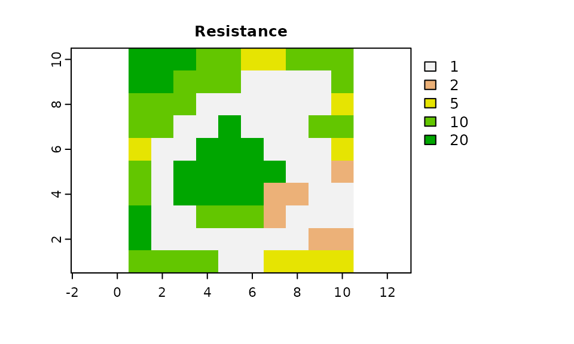
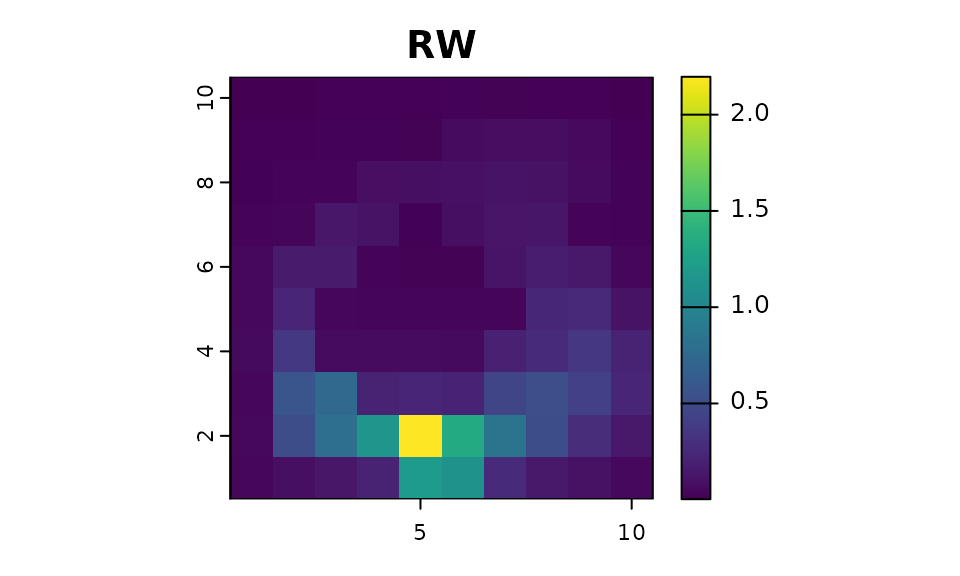

The samc package currently supports a random-walk (RW) model. The random-walk is the default model that always has been used by the package. Version 3 made breaking changes to the samc() function to setup a structure for specifying different models, with plans for a correlated random-walk model in the future.
Models in the samc package are defined as a list with various components depending on the context:
list(name, fun, dir, sym)The basic random-walk is the default model used by the package and uses the following properties:
name: can be omitted or set to "RW"
fun: a function for calculating transition
probabilities from the data input. The convolution algorithm does not
allow for custom functions, so this should be omitted in that
context.dir can be either 4 or 8
sym can be either TRUE or
FALSE, and is used as an optimization when calculating
transition probabilities.
library("terra")
library("samc")
library("viridisLite")
res_data <- samc::rasterize(example_toy_res)
abs_data <- samc::rasterize(example_toy_res * 0 + 0.05)
plot(res_data, main = "Resistance")
rw_model <- list(fun = "1/mean(x)", dir = 8, sym = TRUE)
samc_rw <- samc(res_data, abs_data, model = rw_model)
origin = 85 # Centered near the bottom
dir = 1 # Up and left
vis_rw <- as.vector(visitation(samc_rw, origin = origin))
# The RW results
plot(map(samc_rw, vis_rw), col = viridis(1024), main = "RW")